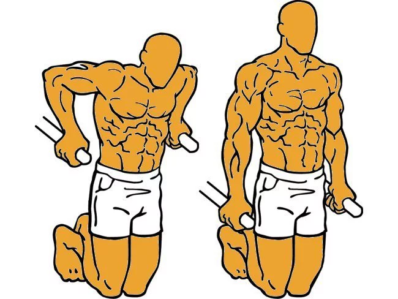
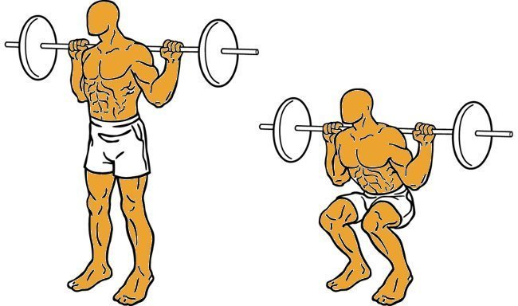
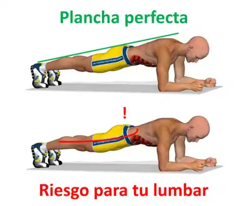

Ejercicios Populares de Calistenia
- Fondos en paralelas 
- Flexiones de brazos
- Dominadas
- Sentadillas 
- Plancha 
Es un ejercicio que fortalece los siguientes grupos musculares:
-Pecho
-Hombro
-Triceps

En las flexiones existen muchas variantes pero las mas populares y las que son una base para la fuerza son:
-Flexiones Regulares o Normales.
-Flexiones Diamante o Cerradas.
-Flexiones Abiertas.
-Flexiones Pika.
-Flexiones Declinadas e Inclinadas.

Es un ejercicio compuesto como lo es los fondos o las flexiones, ya que no solo trabaja un músculo sino, que también trabaja otros grupos musculares como lo serían antebrazo, biceps y hombros también. Las 3 variaciones mas utilizadas son:
-Dominadas Pronas.
-Dominadas Supinas.
-Dominadas Neutras
Las sentadillas es un ejercicio basico para las piernas, trabaja directamente los músculos del muslo, músculos de la cadera y glúteos, y fortalece los huesos, ligamentos y tendones de piernas y caderas, una de las variaciones de las sentadillas serían:
-Sentadillas Bulgaras.
-Sentadillas Explosivas.
-Sentadillas Sumo.
La plancha es un ejercicio isométrico que trabaja el abdomen, que consiste en apoyar los codos en el suelo y mantener la posición de plancha en un tiempo determinado.